Japanese Task Force "KIDO BUTAI" is approaching fast ! !
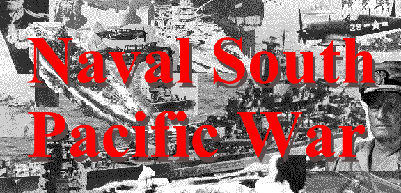
Fire! Sink'em All ! ! Realtime Strategy Game
Ｎａｖａｌ Ｓｏｕｔｈ Ｐａｃｉｆｉｃ Ｗａｒ
Ｃｏｐｙｒｉｇｈｔ １９９９ Ｋｅｎ－ｉｃｈｉ Ｔｏｋｕｍｉｔｓｕ ( 3rd Version ) 奈良鹿製作所
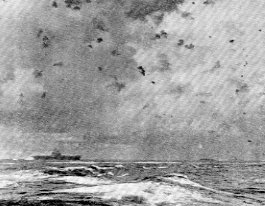
このソフトを入手され、遊んでみようという方に､まず感謝いたします。この様な拙作
でもかなりの時間と労力が要求されます。出来うれば多くの方に喜んでもらえるよう
に期待致します。
また、本アプリケーションは以下の資料を元に作成されました。
(株)学習研究社
[歴史群像]太平洋戦史シリーズ
⑭空母機動部隊 及び他の同シリーズ。
歴史群像新書 激闘 南太平洋海戦 平塚
柾緒 著
(株)日本出版社
Ｂｏｍｂ Ｃｏｍｉｃｓ 空母艦攻隊 滝沢
聖峰 著
（株）光人社
大空のサムライ 坂井三郎 著
大日本帝国海軍航空母艦
http://www02.so-net.ne.jp/~tomoki_k/CV/cv.htm
どんぶらこ（航空母艦のデータベース）
http://member.nifty.ne.jp/KIDOUBUTAI/index.htm
Yamato's World
http://www.biwa.or.jp/~yamato/index.htm
Nihon Kaigun
http://www.skypoint.com/members/jbp/kaigun.htm
その他に多くの資料を参考に致しました。全てに感謝を致します。
本ソフトはＷｉｎｄｏｗｓ用のフリーウェアソフトです。配布、転載は基本的に自由ですが、転載の場合
は出来れば ご一報ください。
本ソフトの著作権は全て、作者の徳光
健一にあります。
なお、本ソフトの起動、使用による、いか
なる損傷その他も当方では一切関知致しません。
ユーザー各位の責任において使用してください。
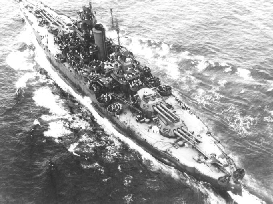
第二次世界大戦、太平洋戦域で行われた日本海軍と合衆国海軍の大海戦をテーマ
にしたリアルタイムストラテジーゲームです。戦艦に巡洋艦、そして空母や航空
機など指揮し、自軍を勝利に導いてください。大海原に轟く戦艦の主砲、爆炎の
中を突き進む駆逐艦、戦闘機の銀翼が舞います。猛烈な戦闘空間が貴方を包み込
みむでしょう。しかし常に冷静にあるべきです。なぜなら、全将兵の名誉と生命が貴方
にかかっているのです、この海の上で、、、、。
起動環境は以下の通りです。
ＯＳ：Ｗｉｎｄｏｗｓ９５・９８
もしくはその後継ＯＳ。
モニター：１０２４＊７６８ドットの２５６色表示可能であること。
ＣＰＵ：１３３ＭＨｚ以上です。推奨は２００ＭＨｚ以上です。
その他：ＤｉｒｅｃｔＸが必要です。
「インストールと起動」
上記の条件を満たす上で、ＨＤ上の任意の場所に解凍します。
後は、その中のアプリケーションファイル「ｎｓｐｗ．ｅｘｅ」を
ダブルクリックで起動します。
「アンインストール」
解凍したファイルを削除するだけです。レジストリの書き換えなどは行って
ません。
「タイトル画面」
起動直後はタイトル画面になっています。
マウス右クリックでシナリオ選択画面になります。
また、他のモードに移っている時に、Ｆ４キーで強制的に
この画面に戻ってきます。
「シナリオ選択画面」
ゲームのシナリオが選べます。
マウスカーソルを希望のシナリオ名の上に移動させ、左クリックでそのシナリオが
起動します。
また、シナリオ名の上にカーソルを乗せた時、そのシナリオでのプレイサイドと概況
勝利条件が画面下に表示されます。
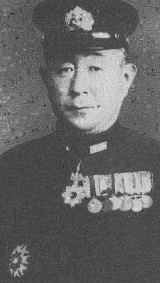
「 操作の基本」
ゲームの操作は全てマウスで行います。
キーボードでは、「Ｆ４キー」でゲームが強制的にタイトルに戻されます。「ＥＳＣキー」
で本アプリケーションが終了されます。
「画面の説明」
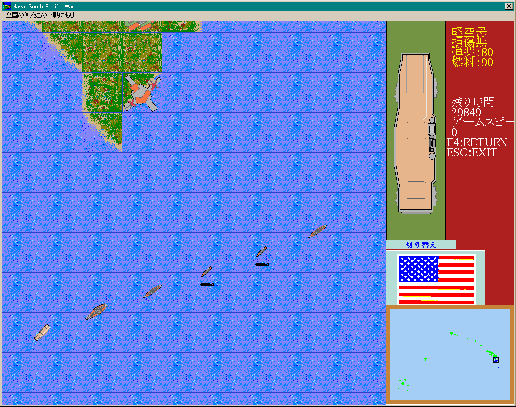
右サイドの残りが、上から情報エリア、各ユニットの絵と情報が表示されます。
また、ゲームの残り時間、ゲームの展開のスピードが表示されます。
国旗のあるエリアがメニューエリアで、ユニットに指示を与えます。
そして、一番下が縮小マップです。縮小マップ上の黒枠が現在表示中
戦術エリアです。
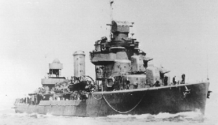
「戦術エリアの移動」
このゲームは広大なマップを使用します。マウスを画面の各端に持っていくとその方向に
戦術エリアがスクロール移動します。また、縮小マップ上でマウスクリックでその場所に
戦術エリアが移動します。
また縮小マップ上の赤点が日本海軍のユニットで青が合衆国海軍のユニットです。
また、点滅している場合は航空ユニットです。
「ユニットの動かしかた」
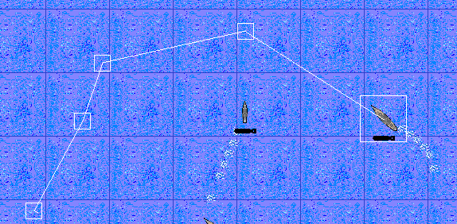
「ユニットの編成と機動」
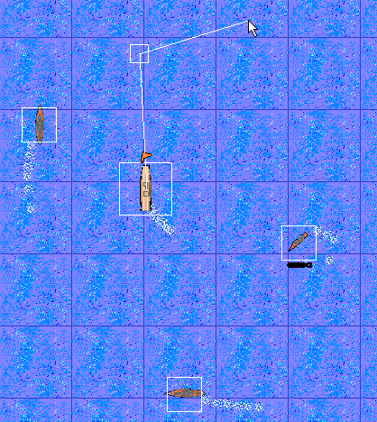
艦船のユニットの場合がもっとも重要で、まず、指揮艦船を選択しその後、それに引率
されるユニットを選択していきます。その後は、移動点を決めていけばいいのです。
また、指揮艦船を選択すると他の艦船も選択されたことになるので、効率的な命令が
くだせます。
また、引率されるユニットは指揮艦船からみての相対方位と距離を保持するように
移動します。
航空ユニットの場合は指揮ユニットと引率されるユニットがありますが、陣形は自動的に
決定されます。
また、引率されるユニットを選択して移動させれば、それまでの指揮ユニットから独立
したユニットまたは、編隊になります。
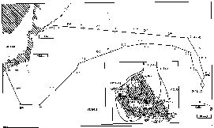
「艦船と地上ユニットの攻撃」
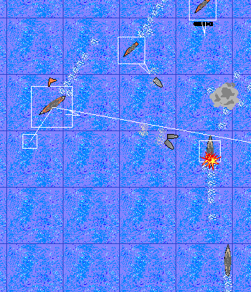
「航空機の攻撃」
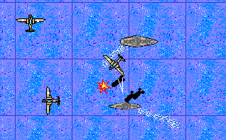
｢駆逐艦による対潜水艦攻撃｣
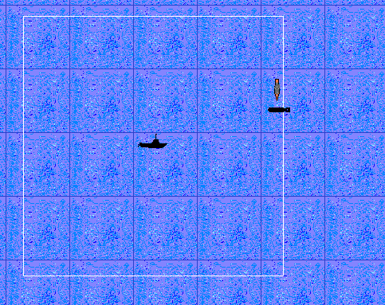
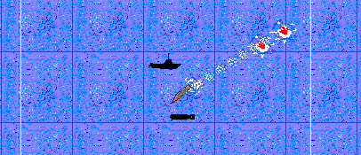
「輸送船の使用」
輸送船も他の艦船と同じく港で補給を受ける事が出来ます。補給を受けたあとには
輸送船には兵員が乗せられております。彼らを陸上の上陸が可能な場所に上陸させる
事が可能です。
輸送船を選択中、上陸させたい場所を指定し、その場所にある程度近づくと上陸が
開始させられます。
「潜水艦の使用」
潜水艦の運用は、基本的には他の艦船と同じです。ただし、その特性上、ちょっとした
くせがあります。まず、敵艦を発見すると自動的に潜航します。こうなると、駆逐艦での
発見以外に見つかりません。また、魚雷発射後、再装填させるためには停止していな
いと駄目です。停止中に再装填作業を行うわけです。また、爆雷は当たりの範囲が
大変広いので駆逐艦からの攻撃には細心の注意が必要です。
「武装の選択」
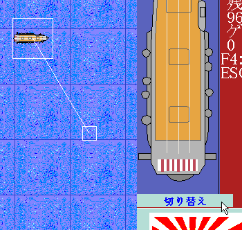
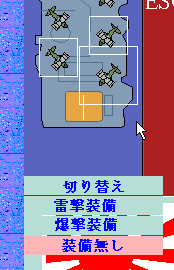
駐機中の航空機を選択すれば可能な武装がメニューに表示され選択すればその武装へ
準備されます。準備中は各ユニットの下に武装のマークが点滅表示されます。もちろん
準備中は発進はできません。点滅終了で準備完了です。
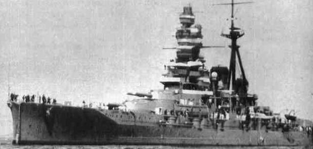
「航空ユニットの発進」
航空基地や空母に格納されている航空機を発進させるにはまず、
格納しているユニットを指定します。その後「切り替え」ボタンを
押下します。
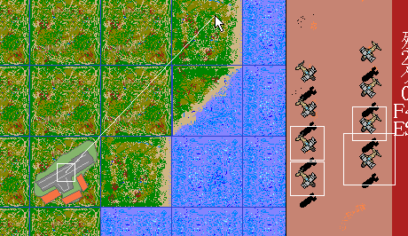
「航空機の帰投」
飛行中の航空機を選択するとメニューに「帰投モード」があります。
これを選択すると航空機は基地に帰投します。この場合、飛行中の
航空機を選び、航空基地か空母をク
リック選択すると、それが帰投先に
なります。帰投を止めさせる場合は「通常移動」を選んでください。
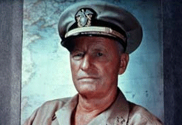
「艦船の補修と修理」
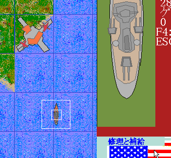
「ユニットの情報」
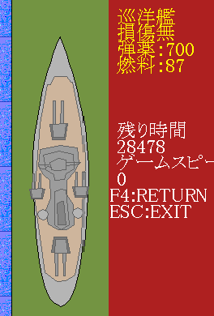
「ハワイ沖大演習」では、
＊艦隊の作り方。まずは、駆逐艦２隻を作って。短縦列、一本の棒の様な艦隊を
作ってみましょう。
＊空母を中心の輪形陣を作って見ましょう。常に空母中心の輪形陣が最適とは
言えませんが、もっとも標準です。
＊標的ユニットの攻撃。
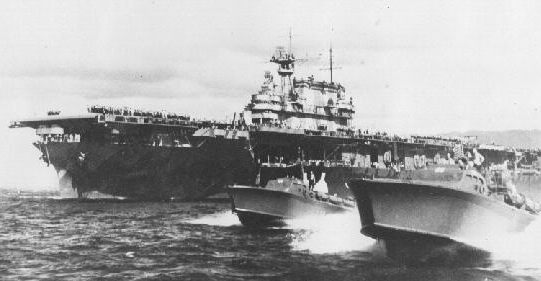
このゲームに登場する各ユニットの絵と簡単な説明です。
| 海上ユニット：大海原を突き進む鋼鉄の城、本ゲームのメインユニットです。 |
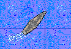 |
戦艦： 海戦の王者とも言える戦艦はその巨大な艦体を生かし、 多くの艦砲、多くの弾薬搭載能力をいます。もちろん航海 距離も長く、また大変撃たれ強いです。 |
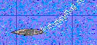 |
巡洋艦： この艦船はどこの海軍でもその戦力の中核をなします。走攻守 にバランスの取れた艦種です。 |
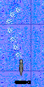 |
駆逐艦： 高速力を生かし、敵艦隊に肉薄しての攻撃を行えます。両海軍とも魚雷を 装備しているので必殺の一撃が可能です。 また、対潜水艦 爆弾を唯一保持しており、その聴音能力で海底に潜む 潜水艦を見つけだ します。 |
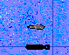 |
潜水艦： 海中深く潜航し、ゆっくりと近づいてきます。その位置はもちろん目視出来ません。 唯一の敵である駆逐艦により、その位置を知られる可能性があります。 |
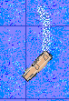 |
軽空母： 艦載出来る機数は８機で正規空母にくらべて劣りますが、その高速力が鍵です。 艦自体の武装はもちろん貧弱なものにとどまります。 |
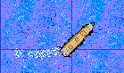 |
正規空母： 艦載機を計１２機搭載できます。これだけの艦載機があれは十分な効果 が狙えます。ただし、その見返りは巨体ゆえの機動力の無さです。また、 決して撃たれ強い艦体ではありません。その搭載するエアパワー を 有効に使ってください。 |
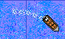 |
輸送船： 主に兵員を輸送するのに使用します。武装はありません。 |
| 航空ユニット：荒鷲たちが舞う大空。そこは戦いのもう一つの舞台です。 |
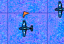 |
戦闘機： 空の戦いの主役です。高速と機動力を有し他の戦闘機や攻撃機、爆撃機を 攻撃します。空母での発着艦可能です。 |
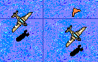 |
攻撃機： 空から、地上、海面の敵をその爆弾もしくは魚雷で撃破します。 もちろん、戦闘機に狙われると大変危険です。 |
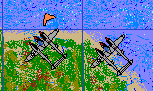 |
陸上戦闘機： 陸上の航空基地からのみ発進できる戦闘機です。 |
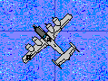 |
戦略爆撃機： 計４発のエンジンを両翼に搭載し、その巨体を持ち上げます。当然、爆弾搭載量も 半端なものではありません。さらに、敵の攻撃に対してもその超高空飛行と十分な 防弾設備で敵の攻撃を無意味な物にします。ただし、空母には発着艦出来ません。 |
| 地上施設：戦いを影で支えるユニットです。 |
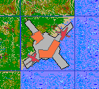 |
軍港： 自軍の艦船がこの港の近くにいると補給と修理が受けられます。 |
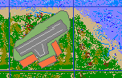 |
航空基地： あらゆる航空戦力を１６機まで収納でき、補修、補給が可能です。 |
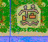 |
歩兵基地： 主に塹壕を一帯に巡らせています。わずかではありますが、野砲を装備してます。 |
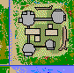 |
トーチカ群： コンクリートのトーチカをメインにした基地です。 |
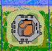 |
要塞： 分厚いコンクリートと鋼鉄で基地全体を防備してます。手動ではない巨大な重砲が 装備されています。 |
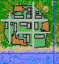 |
都市： 多く人々がすんでおります。基本的に非戦闘員のみが存在しており、敵ユニットに対する 攻撃力はありません。 |
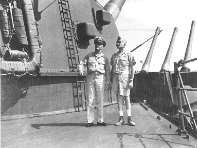
本ゲームで使用されるマップ上の必要な地名を記しておきます。
「南太平洋」
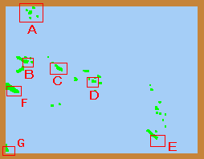
Ａ：クエゼリン環礁
Ｂ：ラバウル
Ｃ：ブーゲンビル
Ｄ：ガダルカナル
Ｅ：ヌーメア
Ｆ：ポートモレスビー
Ｇ：ブリスベーン
「中部太平洋」
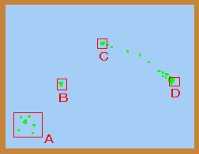
「日本近海」
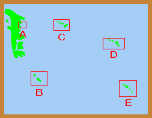
Ａ：横須賀
Ｂ：沖縄
Ｃ：硫黄島
Ｄ：マリアナ
Ｅ：パラオ
Ｖｅｒ１．０２まで
世の中にフリーウェアのゲームソフトは多くありますが、それらの多くは今後の改良を謳っています。
なにしろ、ゲームソフトは改良に切りがありません。
で、ご多分にもれず本ソフトもこの第一版が満足の出来る出来ではありません。このままでは切りが
ないので、ここいらでまとめて発表してしまおうというのがかなりあります。
で、今後の改良点ですが。
＊通信対戦にしたい。
この通信対戦というのは魔法のように普通に面白いゲームを異常に面白いゲーム
にしてしまいます。本作品の次回での最優先課題です。
＊資源やユニットの増援
このゲーム最初に用意されたユニット以上に増えることはありません。そこで増援が
あればいいと思います。また、資源の採掘地を押さえると事がポイントになるなどです。
＊輸送船の利用
上陸や占領があればゲームはかなり面白くなるでしょう。
Ｖｅｒ１．１０の時
今回は追加シナリオバージョンです。一応、輸送船とかの新ユニット？もありますが、おおくの
シナリオが追加されております。また、その他に多くのプログラム修正なども行っております。
ただ、残念な事に、このゲームが本来起動可能なのに起動しない環境がいくつ
かあるようで
す。 いまのところ、液晶画面に弱いようです。
こういうのは何とかしたいのですが、私の周り
にはそんなＰＣはないのでつらいところです。一応、通信対戦開発用に１台買う予定なので
ノートＰＣにして試したいと思います。
Ｖｅｒ１．０２
うーぬ、やっと第一版が完成したかという感じです。もちろんこのゲームがです。
しっかしゲームつくんのってなんでこんなに大変なのかね。ほんまつらいわー。
とはいっても上にも書いたけどまだまだ完成ではないのだなこれが。
気になるのは、やっぱり面白くできたかだなぁ。一番の気がかりはゲームとしての
テスト、いわゆるゲームバランスというのだがこれを俺一人しか事実上試してないん
だな、 これが。
とにかく、面白く遊んで欲しいです。そうでないときは何とか各自工夫して面白く遊んで
ください。たとえば、自軍の艦船が一隻やられるたびに爪を一枚一枚はがしていくという
ルールでやればかなり真剣にあそべます。お願いします。
あと、私のメールアドレスを記しておきますので、できれば感想が欲しいです、できれば
誉めてる内容がいいです。できれば感動して涙が３日くらい止まらんかった、とかだった
らいいです。フリーウェアの喜びとはまさにプレイヤーからの返事以外には殆どありま
せん。多少は、雑誌に掲載などで雑誌がただでもらえる程度です。
だからおねがーいなんかメール頂戴ね。
メールもらえるとバージョンアップしたときなどに連絡できます。
あと、たまには靖国神社にいって英霊に手をあわせにいこうな。俺は三回くらい
行っただけだけどな。
賽銭は１０円くらいでもいいからな。
Ｖｅｒ１．１０
現況のとこにも書きましたが、今回はシナリオ追加がメインです。新たなフィーチャーは
あまりありません。それでも、なんやかんやで結構多くのシナリオ追加ができたと
思います。また、既存のシナリオも結構修正しています。
今回追加した中で個人的に気に入ったシナリオ、またはよく出来てると思うシナリオは
＊空母「飛龍」未ダ健在ナリ
＊救出大作戦！ディープブルー航空隊
＊大空のサムライ
の三つですね。特に「救出大作戦！」は一番のお気に入りです。ただ、クリアするのは
難しいですけど。「はよ整備しゃんかぁ！」と思わず怒鳴る作品です。
今回から登場した「ディープブルー航空隊」は人気があればシリーズ化しようなどと
考えています。
その時は、やはり、ライバルとしてパワーアップした日本海軍も
登場させます。このゲーム、やった人ならわかるのですが、あまり、大日本海軍
万歳ゲームではないです。他のこの種のゲームでは大抵が
そうなんですが、
その辺がこのゲームの変わったところです。まぁ、もっとも最初からそのつもりで
作ったのですが、、、。どちらかと言えば米軍が若干主役っぽいかな？という
ところがポイントです。。タイトルの絵でも、ニミッツ長官が一番でかいからなぁ。
でも、一応は日本人が日本人向けに日本語ベースで作るから、日本海軍も
がんばってます。まぁどちらもどちらで好きな方で遊んでください。
それと、このゲームについてなにやら情報交換できるＨＰなども作ろうと計画中です。
一応、このＮＳＰＷ以外にも作っているので専用ＨＰではないです。
これについては
ユーザーの皆様から何か意見があればメールください。
で、例によって思うのだがゲームを作るのはほんとーに大変だ。なんでも最近はホビー
プログラマでゲームを作ろうという人の数はかなり少ないらしい。そりゃそうだろうなぁ、
昔と今じゃ、要求される完成度が半端じゃないからなぁ。昔はキャラクタなんて「＠」が
モンスターで「人」が主人公のキャラとかで十分だったけど、今はそうはいかない、
ちゃんとドット絵描いてなきゃだめだもんな。特にこのゲームの場合、ユニットの動きと
か
操作の対処とかも自分で作るからなお大変、ホントーにアスキーになんというか、
「リアルタイムストラテジゲームツクール」とかいうの作って欲しいぐらいだ。
このゲームは一応フリーウェアなのですが、通信対戦が付いた場合にはシェアウェア
になるかもしれません。今回のバージョンアップの為にＶＣ＋＋の新バージョンを
購入したのですが、これが８万円した。通信対戦の開発となるとそっくりマシンが２台
いります。私個人の労力はまぁいいのだが、物買うとなると結構つらい。
というわけで
その時はよろしく。
とりあえず、制限無しのシェアウェアです。でも、何かの特典は
つけるかもね。
Ｖｅｒ１．２０
今回のバージョンで第３版になります。例によって追加ミッション版です。変更は以下、
「ネーバルサウスパシフィックウォー（空母付き）」が変更され「絶対制空大作戦！ディープブルー航空隊」。
あとは、シナリオ第４集の７シナリオです。
その他に、修正したシナリオも多くあります。
奈良鹿製作所
徳光 健一（HN:ケンイッチン＝トクミッツマン）
E-mail:kenken@ta2.so-net.ne.jp
Home Page:http://www02.u-page.so-net.ne.jp/ta2/kenken/
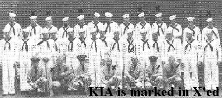